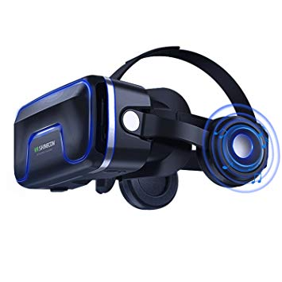

 La realidad virtual (RV) es un entorno de escenas u objetos de apariencia real. La acepción más común refiere a un entorno generado mediante tecnología informática, que crea en el usuario la sensación de estar inmerso en él. Dicho entorno es contemplado por el usuario a través de un dispositivo conocido como gafas o casco de realidad virtual. Este puede ir acompañado de otros dispositivos, como guantes o trajes especiales, que permiten una mayor interacción con el entorno así como la percepción de diferentes estímulos que intensifican la sensación de realidad.